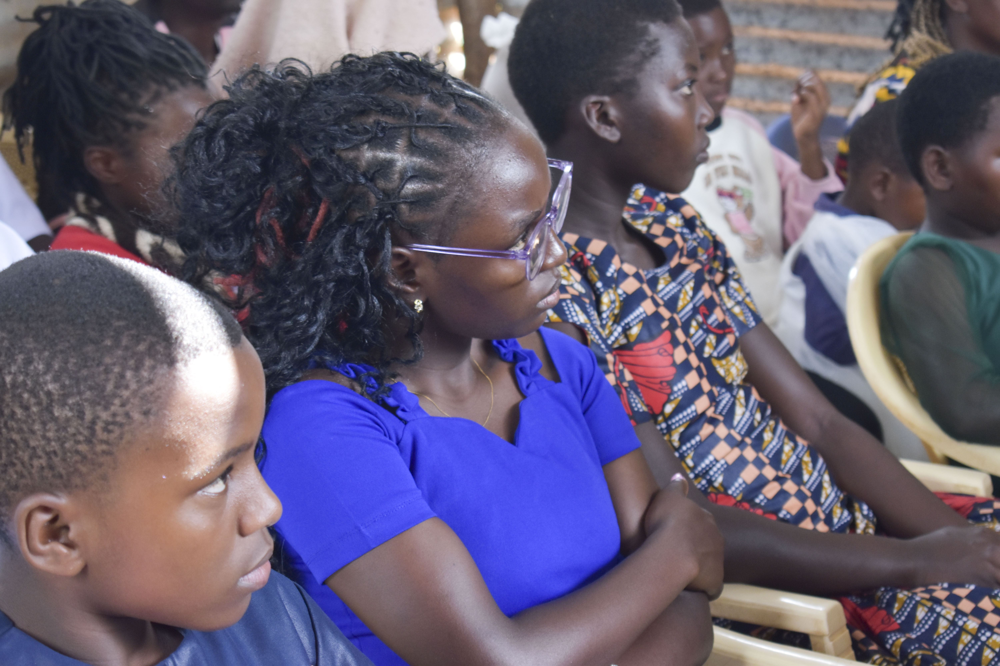
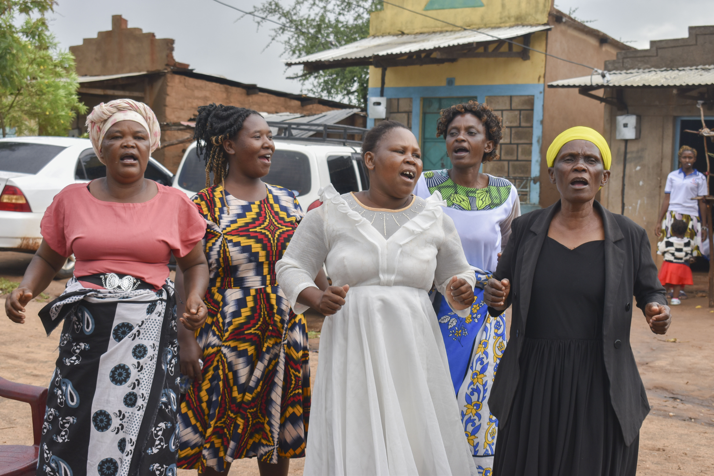

Jesus Healing Sanctuary Ministries
Jesus Healing Sanctuary Ministries
Jesus Healing Sanctuary Ministries
Jesus Healing Sanctuary Ministries


Rev. Peter Mutua
Regional Overseer
The Eastern Region of Jesus Healing Sanctuary Ministries (JHSM) is a vibrant and growing area under the dynamic leadership of Regional Overseer Rev. Peter Mutua. Together with his wife, Pastor Alice Mutua, they have faithfully overseen the spiritual growth, discipleship, and outreach efforts across the region's churches. Their ministry reflects a deep commitment to nurturing believers, empowering leaders, and extending the love of Christ throughout the Kajiado area.

Pastor Alice Mutua
Regional Headquarters
JHSM Thua, the headquarters of the Eastern region, is strategically located in Thua town,approximately 200 meters from the road on the right-hand side of the road.
The church is under the pastoral care of Rev. Peter Mutua and Pastor Alice Mutua, who have provided visionary leadership and shepherded the congregation with dedication.


Itinda Branch
JHSM Itinda, under the strong leadership of Pastor Joseph, has continued to grow as a vibrant and Christ-centered ministry dedicated to sharing the Gospel, nurturing believers, and transforming lives through the power of God's Word.Through prayer, sound biblical teaching, community outreach, and compassionate service, JHSM Itinda remains committed to raising disciples who reflect Christ in their homes, workplaces, schools, and communities
Karura Branch
JHSM Karura, under the capable leadership of Pastor Paul, continues to flourish as a dynamic and welcoming congregation dedicated to proclaiming the Gospel of Jesus Christ and nurturing believers in their spiritual journey. The church is committed to creating an atmosphere where individuals and families can experience God's love, grow in faith, and build meaningful relationships with one another.

Through the tireless leadership of Rev. Peter Mutua, the Eastern Region of JHSM stands as a testimony of faith, excellence, and spiritual impact. Each church under his oversight contributes uniquely to the mission of spreading the Gospel and transforming lives across the region.
Join us for worship and fellowship throughout the week
Where hearts are enlightened, minds are renewed, and purpose is discovered.
Raising a generation that tarries in His presence, hears His voice, and changes nations on their knees.
Representing heaven on earth, carrying His light, love, and power everywhere we go.
Experience the love of God and the power of His presence

| Paybill: | 247247 |
|---|---|
| Account Number: | 1100281008321 |